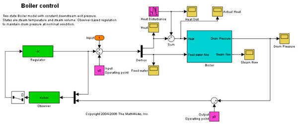
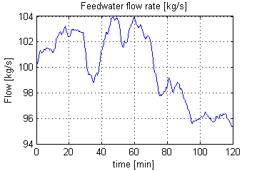
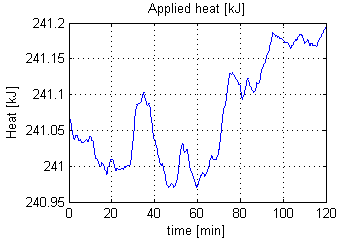
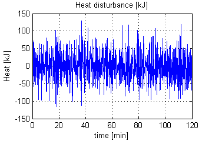
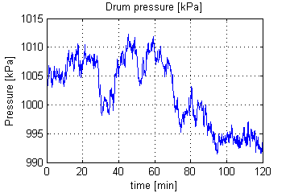

ドラム-ボイラーの圧力の調整
目次
このデモでは、応用例として、ドラム-ボイラーを使った Simulink® Control Design™ の使用法を説明します。操作点の検索機能を使用して、モデルの線形化だけでなく、それ以降の状態オブザーバーおよび LQR の設計についても説明します。
このドラム-ボイラー モデルにおける制御上の問題は、給水の流量と適用された標準熱を調整することで、炉からのランダムな熱変動に対してボイラーの圧力を調整することです。この例の場合、ランダムな熱変動の 95% が 50% 未満である標準発熱量です。これは、炉による燃焼ボイラーでは異常ではありません。
手順 1: モデルを初期化して開く
開始するには、Simulink® モデルを開きます。
Boiler_Demo
ボイラー制御モデルのプリロード関数は、コントローラーの次数を初期化します。これは、操作点と線形モデルを計算するために、Simulink モデルは実行可能でなければならないため必要です。u0、y0 は、操作点の計算後に設定されるため、最初は 0 に設定されることに注意してください。オブザーバーとレギュレーターも、コントローラーの設計手順で計算されるため、最初は 0 に設定されます。
手順 2: 標準操作点の検索とモデルの線形化
モデルの初期状態値は、Simulink モデルで定義されます。これらの状態値を使って、関数 findop を使用した定常状態の操作点を検索します。
最初に、状態値がわかっている操作点の仕様を作成します。
opspec = operspec('Boiler_Demo');
opspec.States(1).Known = 1;
opspec.States(2).Known = 1;
opspec.States(3).Known = [1;1];
ここで、操作点の仕様を調整して、入力を計算しなければならないことと、入力が下限であることを示します。
opspec.Inputs(1).Known = [0;0]; %Inputs unknown opspec.Inputs(1).Min = [0;0]; %Input minimum value
最後に、出力の仕様を操作点の仕様に追加します。これは、出力の操作点が処理時に計算されるようにするのに必要です。
opspec = addoutputspec(opspec,'Boiler_Demo/Boiler',1); opspec.Outputs(1).Known = 0; %Outputs unknown opspec.Outputs(1).Min = 0; %Output minimum value
次に、操作点を計算して、レポートを生成します。
[opSS,opReport] = findop('Boiler_Demo',opspec);
Operating Point Search Report:
---------------------------------
Operating Report for the Model Boiler_Demo.
(Time-Varying Components Evaluated at time t=0)
Operating point specifications were successfully met.
States:
----------
(1.) Boiler_Demo/Boiler/Steam volume
x: 5.6 dx: 7.85e-013 (0)
(2.) Boiler_Demo/Boiler/Temperature
x: 180 dx: -5.93e-014 (0)
(3.) Boiler_Demo/Observer/Internal
x: 0 dx: 0 (0)
x: 0 dx: 0 (0)
Inputs:
----------
(1.) Boiler_Demo/Input
u: 2.41e+005 [0 Inf]
u: 100 [0 Inf]
Outputs:
----------
(1.) Boiler_Demo/Boiler
y: 1e+003 [0 Inf]
この点の周りのモデルを線形化する前に、線形モデルの入力信号と出力信号を指定します。
最初に、線形化の入力点を指定します。
Boiler_io(1)=linio('Boiler_Demo/Sum',1,'in'); Boiler_io(2)=linio('Boiler_Demo/Demux',2,'in');
ここで、線形化の開ループの出力点を指定します。
Boiler_io(3)=linio('Boiler_Demo/Boiler',1,'out','on'); setlinio('Boiler_Demo',Boiler_io);
このコードでは、選択した操作点の周りの線形モデルを見つけます。
Lin_Boiler = linearize('Boiler_Demo',opSS,Boiler_io);
最後に、関数 minreal を使用して、モデルが最小実現であることを確認します (たとえば、極/零点の相殺がないなど)。
Lin_Boiler = minreal(Lin_Boiler);
1 state removed.
手順 3: レギュレーターと状態オブザーバーの設計
この線形モデルを使用して、LQR レギュレーターと Kalman フィルター状態オブザーバーを設計します。最初に、コントローラーのオフセットを検索し、コントローラーが、計算された操作点を取得することで、選択した線形化ポイントの周りで動作していることを確認します。
u0 = opReport.Inputs.u; y0 = opReport.Outputs.y;
ここで、関数 lqry を使用してレギュレーターを設計します。入力の変動は制限されていますが、出力の厳密なレギュレーションが必要であることに注意してください。
Q = diag(1e8); %Output regulation R = diag([1e2,1e6]); %Input limitation [K,S,E] = lqry(Lin_Boiler,Q,R);
関数 kalman を使用して、Kalman 状態オブザーバーを設計します。この例では、主なノイズ源はプロセス ノイズであることに注意してください。1 つの入力を介してのみシステムに入るため、G と H の形式です。
[A,B,C,D] = ssdata(Lin_Boiler); G = [B(:,1)]; H = [0]; QN = 1e4; RN = 1e-1; NN = 0; [Kobsv,L,P] = kalman(ss(A,[B G],C,[D H]),QN,RN);
手順 4: シミュレーションとテスト
設計したコントローラーに対するプロセス入力および出力は次のとおりです。
sim('Boiler_Demo')
以下は、給水の作動信号 (単位は kg/s) です。
figSize = [0 0 360 240]; h = figure(1); plot(FeedWater.time/60,FeedWater.signals.values) set(h,'color',[1 1 1]) set(h,'Position',figSize) title('Feedwater flow rate [kg/s]'); ylabel('Flow [kg/s]') xlabel('time [min]') grid on
次に、熱の作動信号 (単位は kJ) を示します。
h = figure(2); plot(Heat.time/60,Heat.signals.values/1000) set(h,'color',[1 1 1]) set(h,'Position',figSize) title('Applied heat [kJ]'); ylabel('Heat [kJ]') xlabel('time [min]') grid on
次の図は、熱の外乱 (単位は kJ) を示しています。外乱は、熱の標準値の 50% も変動します。
h = figure(3); plot(HeatDist.time/60,HeatDist.signals.values/1000) set(h,'color',[1 1 1]) set(h,'Position',figSize) title('Heat disturbance [kJ]'); ylabel('Heat [kJ]') xlabel('time [min]') grid on
次の図は、対応するドラム圧力 (単位は kPa) を示しています。外乱が比較的大きい場合でも、圧力は標準値の約 1% 変動することに注目してください。
h =figure(4); plot(DrumPressure.time/60,DrumPressure.signals.values) set(h,'color',[1 1 1]) set(h,'Position',figSize) title('Drum pressure [kPa]'); ylabel('Pressure [kPa]') xlabel('time [min]') grid on bdclose('Boiler_Demo')